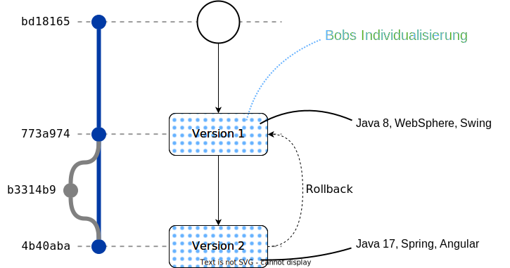
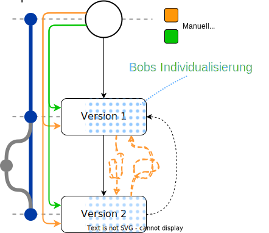
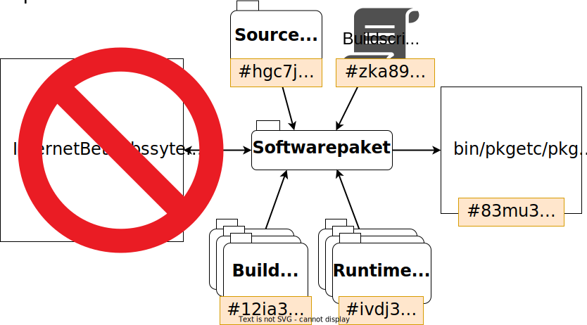
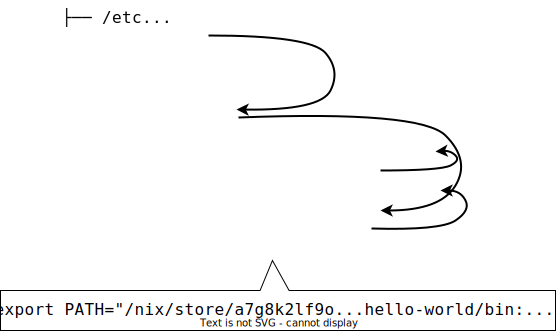
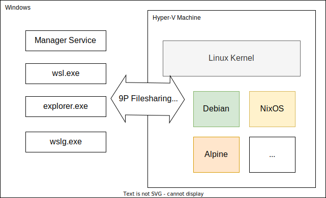

<!DOCTYPE html>
<html lang="en">
  <head>
    <meta charset="utf-8" />
    <meta name="viewport" content="width=device-width, initial-scale=1.0, maximum-scale=1.0, user-scalable=no" />

    <title>Development Environments as Code</title>
    <link rel="shortcut icon" href="./favicon.ico" />
    <link rel="stylesheet" href="./dist/reset.css" />
    <link rel="stylesheet" href="./dist/reveal.css" />
    <link rel="stylesheet" href="./assets/./theme/swiss.css" id="theme" />
    <link rel="stylesheet" href="./css/highlight/intellij-light.css" />


  </head>
  <body>
    <div class="reveal">
      <div class="slides"><section  data-markdown><script type="text/template">

# Development Environments as Code <!-- .element: id="title" -->

<!-- {{{ -->

<hr> 

<div class=two-col>
<div class=left style=width:40% >

Johannes Hüttinger

<br>


</div>
<div class=right style=white-space:nowrap >

[<i class="fa-solid fa-envelope"></i> johannes.huettinger@aformatik.de](mailto:johannes.huettinger@aformatik.de)

[<i class="fa-solid fa-house"></i> aformatik &ndash; Training & Consulting](https://www.aformatik.de)\
[<i style=visibility:hidden class="fa-solid fa-house"></i> www.aformatik.de](https://www.aformatik.de)

</div>
</div>

<!-- <iframe src="?controls=false#/1/0/4"  width=800px height=800px style="position:absolute; top:50%; left:50%; border: 1px solid black; transform: scale(1); transform-origin: 0 0" /> -->

<aside class="notes"><ul>
<li><p>Jeder Entwickler kennt das Problem:</p>
<ul>
<li>Softwareprojekt = Entwicklungsumgebung einrichten<ul>
<li>System, IDE, Compiler, Docker, DBs, ...</li>
</ul>
</li>
<li>Dazu kommen Systemwartung, Verteilung im Team, ...</li>
<li>Dieser Talk:<ul>
<li>wie möglichst reibungslos und automatisiert</li>
<li>für Entwickler heißt das: mit Code</li>
</ul>
</li>
</ul>
</li>
<li><p>Warum ist das überhaupt relevant?</p>
<ul>
<li>Zu jedem Softwareprojekt gehört eine EU</li>
</ul>
</li>
<li><p>Für</p>
<ol>
<li>Individualsoftware: <ul>
<li>Mehrere Projekte, Je nach Projektsituation wechseln Entwickler zwischen Projekten</li>
</ul>
</li>
<li>Produktentwicklung: Viele Entwickler benötigen genau die gleiche EU</li>
<li>Open Source Projekte:<ul>
<li>neue Contributor sollen möglichst schnell anfangen können</li>
<li>nicht lange mit Setup beschäftigen</li>
</ul>
</li>
</ol>
</li>
</ul>
<!-- }}} --></aside></script></section><section ><section data-markdown><script type="text/template">
## Wozu Entwicklungs&shy;umgebungen?

<!-- {{{ -->

<div class="two-col">
<div class="left fragment">

### 1.&nbsp;&nbsp;Wartung
<!-- .element: style="margin-bottom: 1em; margin-top: 1em" -->

#### Tools zur Entwicklung eines Projektes bereitstellen

#Erstellung #Updates #Rollbacks #Automatisierung #Reproduzierbarkeit 

</div>
<div class="right fragment">

### 2.&nbsp;&nbsp;Developer Experience
<!-- .element: style="margin-bottom: 1em; margin-top: 1em" -->

#### Entwickler entwickeln lassen

#Integration #Performance #Individualisierung

</div>
</div>

<aside class="notes"><ul>
<li>Wozu braucht man EUs?</li>
</ul>
<ol>
<li><p>Tools bereitstellen (offensichtlich)</p>
<ul>
<li>dazu gehört aber auch: <ul>
<li>Projekt entwickelt sich =&gt; Änderungen (Wartung)</li>
<li>Verteilung im Team<ul>
<li>Automatisierung / Zuverlässigkeit</li>
</ul>
</li>
</ul>
</li>
</ul>
</li>
<li><p>Entwicklerprod. (DX)</p>
<ul>
<li>EU soll mich möglichst produktiv machen</li>
<li>=&gt; Performance</li>
<li>=&gt; Integration mit Umgebungsübergreifenden Tools (Teams, Mail, etc.)</li>
<li>=&gt; Individualisierung</li>
</ul>
</li>
</ol>
<ul>
<li>Wir schauen uns in diesem Vortrag diese beiden Aspekte an, d.h. im Hinterkopf behalten</li>
</ul>
</aside></script></section><section data-markdown><script type="text/template">
## Entwicklung einer Entwicklungsumgebung



<aside class="notes"><ul>
<li><p>haben festgestellt, das EU nicht etwas statisches ist, sondern sich mit Projekt mitentwickelt</p>
</li>
<li><p>Entwicklung eines Projektes in Versionsverwaltung (Git) festgehalten</p>
</li>
<li><p>z.B. Anfang: JDK8, eclipse</p>
</li>
<li><p>nach einigen Jahren: JDK17, IJ, nodejs</p>
</li>
<li><p>Weihnachten 2021: log4j =&gt; Fixes backporten</p>
<ul>
<li>komplette Historie des Codes in Git =&gt; git checkout v1</li>
<li>EU von vor ein paar Jahren nötig</li>
</ul>
</li>
<li><p>genauso auch EU: an jedem Commit d. Projekts passende Tools zur Verfügung</p>
</li>
<li><p>Oder Feature branches</p>
</li>
<li><p>Zusätzlich zu Projektentwicklung: Entwickler</p>
<ul>
<li>verändern den Zustand der EU: <ul>
<li>Konfiguration, Paketinstallation (DX)</li>
<li>Zustand (DB, Logins, ...)</li>
</ul>
</li>
<li>diese Änderungen mitnehmen zwischen Versionen</li>
</ul>
</li>
</ul>
</aside></script></section><section data-markdown><script type="text/template">
## Stand der Dinge

<div class="two-col">
<div class="left">

- ~~❓ Manuell / Bare Metal~~ <!-- .element: class="fragment""-->
- 🟧 Virtuelle Maschinen
<!-- .element: class="fragment""-->
- 🟩 ⚠️ VS Code + Docker<br>(Devcontainers / Codespaces)
<!-- .element: class="fragment""-->
- 🟩 Vagrant + Ansible
<!-- .element: class="fragment""-->
- ...
<!-- .element: class="fragment""-->

<!-- .element: style="list-style: none"-->

</div>
<div class="right fragment" style="width:50%">

</div>
</div>

<aside class="notes"><ul>
<li><p>Das war die Theorie. Wie siehts in der Praxis aus?</p>
</li>
<li><p>Schauen wir uns mal die gängigen Vorgehensweisen an</p>
<ul>
<li>Häufig: Manuell auf Bare Metal<ul>
<li>keine Lösung, weil nicht automatisch oder reproduzierbar</li>
</ul>
</li>
<li>Besser: manuelle Installation (einmalig) in VM<ul>
<li>dann VM verteilen =&gt; Kollegen starten einfach nur VM</li>
</ul>
</li>
<li>Seit einigen Jahren Infrastructure as Code<ul>
<li>Docker, Vagrant, Ansible</li>
<li>d.h. Systemconf. als Code (Skripte)</li>
<li>Tool, das diese Skripte realisiert</li>
<li>Code: kann in Projekt Repo liegen und sich mitentwickeln</li>
</ul>
</li>
</ul>
</li>
<li><p>Werden diese Ansätze unseren Anforderungen gerecht? NEIN</p>
<ul>
<li>Warum nicht? <ul>
<li>inkrementelle Updates der EU nicht möglich, sobald EU verändert wurde</li>
<li>virtuelle Maschinen sowieso<ul>
<li>hier muss jede Version manuell erstellt werden</li>
</ul>
</li>
<li>Tools erstellen immer gewünschte Version from Scratch</li>
<li>Zustand, Anpassungen gehen dazwischen verloren</li>
<li>Deshalb: selten Updates, und dann manuell einrichten oder manuell updaten</li>
</ul>
</li>
<li>Außerdem<ul>
<li>VMs:<ul>
<li>erstellung oft nicht dokumentiert</li>
<li>nach einigen Jahren: Wie hab ich das damals gemacht?</li>
</ul>
</li>
<li>Scripte:<ul>
<li>nicht ergonomisch um komplexe Systeme zu konfigurieren</li>
</ul>
</li>
</ul>
</li>
</ul>
</li>
<li><p>Warum ist inkrementelles Updaten / rollbacks nicht so einfach möglich?</p>
</li>
<li><p>Um das zu verstehen, schauen wir uns an, wie diese Ansätze ein System einrichten</p>
</li>
</ul>
<!-- }}} --></aside></script></section></section><section ><section data-markdown><script type="text/template">
## Traditionelles Systemmanagement

<!-- {{{ -->

<div class="two-col">
<div class=left style=width:60% >

```text
apt update && apt upgrade
apt install x y z

useradd bob
groupadd postgres
chown -R bob /var/lib/...
vi /etc/ssh/sshd_config
systemd enable sshd.service
```
<!-- .element: style="font-size:1em" -->

<br>

- Destruktive Inplace-Updates
- Veränderung des globalen Systemzustands
- Nicht-atomar
- 👉 &nbsp;Zustandsabhängig
<!-- .element: style="list-style:none;font-weight:bolder;transform:translate(-1.5em,0)" -->

<!-- .element: class="fragment" -->

</div>
<div class=right style=width:35% >

```text
├── etc
│  └── systemd
├── home
├── usr
│  ├── bin
│  ├── lib
│  └── share
└── var/lib
```
 <!-- .element: style="font-size:1em" -->

<br>

- "Dependency Hell"
- Oft nur *eine* Version einer Software
- Keine unpriviligierte Installation

<!-- .element: class="fragment" -->

</div>
</div>


<aside class="notes"><ul>
<li>Ansätze basieren alle auf traditionellen System- / Paketmanagement</li>
<li>Auf der rechten Seite ein Linux Dateisystem<ul>
<li>vordefinierte Order, <ul>
<li>etc = configs</li>
<li>home = Userdateien</li>
<li>/usr/bin = Programme</li>
<li>/usr/lib = Libs</li>
</ul>
</li>
<li>auf Win / Mac ähnlich, nur andere Namen</li>
</ul>
</li>
<li>links ein ausschnitt aus meinem Dockerfile / Ansible Playbook<ul>
<li>reihe von Befehlen</li>
<li>Jeder Befehl verändert den Systemzustand destruktiv und inplace 
  =&gt; nicht mehr rückgängig</li>
<li>Das ganze ist nicht atomar
  =&gt; Skript schlägt in der Mitte fehl 
  =&gt; undef. Zustand. weiß nicht, was verändert wurde</li>
<li>Befehle verändern nicht nur den Zustand, sondern hängen auch davon ab</li>
<li>Reihenfolge beachten =&gt; Fragil</li>
</ul>
</li>
<li>Daraus wird klar:<ul>
<li>ich kann zwar so &quot;from scratch&quot; mein System konfigurieren</li>
<li>aber nach der Installation verändert jeder Entwickler seinen Systemzustand</li>
<li>von einem unbekannten Systemzustand kein zuverlässiges Updaten möglich</li>
<li>deshalb immer from scratch</li>
</ul>
</li>
</ul>
</aside></script></section><section data-markdown><script type="text/template">
## Imperativ vs. Funktional

<div class="two-col">
<div class=left >

```java
static int x;

int add(int a, int b) {
    ...
    Date.now()
    ...
    new Random()
    ...
    x++
    ...
}
```
<!-- .element: class="fragment" style="font-size:1em" -->

<br>

- **Mutable** by default
- Uneingeschränkte Seiteneffekte

<!-- .element: class="fragment" -->

</div>
<div class=right>

```haskell
plus :: Int -> Int -> Int
plus = ...


```
<!-- .element: class="fragment" style="font-size:1em" -->

<br>

- **Immutable** by default
- Referentielle Transparenz

<!-- .element: class="fragment" -->

</div>
</div>

<aside class="notes"><ul>
<li>Ähnliches Problem auch in Programmierung</li>
<li>Meiste Sprachen<ul>
<li>imperativ =&gt; Reihe von Befehlen<ul>
<li>wie bei trad. Systemmanagement</li>
</ul>
</li>
<li>Mutability by default</li>
<li>Seiteneffekte: Abhängig von Umgebung und verändern Umgebung</li>
<li>weiß nicht, von was eine Codezeile abhängt und was sie tut<ul>
<li>=&gt; muss reinschauen</li>
</ul>
</li>
</ul>
</li>
<li>Dagegen Rein Funktionale Sprachen:<ul>
<li>Immutable, keine versteckten Seiteneffekte</li>
<li>referentielle Transparenz =&gt; bei gleichen Parametern liefern Funktionen immer gleichen Wert</li>
<li>=&gt; reproduzierbar</li>
<li>Funktionalität meist aus Typsignatur (+Name) ersichtlich</li>
</ul>
</li>
</ul>
</aside></script></section><section data-markdown><script type="text/template">
## Funktionales Paketmanagement



<aside class="notes"><ul>
<li>Zurück zum Systemmanagement: </li>
<li>hier ist unser imperatives Management:<ul>
<li>Systemzustand += Source Code + Buildscript</li>
<li>Paket bauen / installieren =&gt; Systemzustand nehmen und verändern</li>
</ul>
</li>
<li>Wie kann funktionales Prinzip übertragen werden?<ul>
<li>Alle Seiteneffekte verbieten, Abhängigkeiten explizit machen</li>
<li>Z.B. Java Binary: JDK, Maven, JRE</li>
<li>Rückgabewert:<ul>
<li>verändere nicht mehr System mit gebauten Dateien</li>
<li>sondern speichere Dateien separat ab</li>
</ul>
</li>
</ul>
</li>
<li>Somit mein Paket bitgenau reproduzierbar - bei exakt gleichen Inputs exakt gleicher Output <ul>
<li>=&gt; Referentielle Transparenz</li>
</ul>
</li>
<li>Wie stelle ich bitgenau Äquivalenz von Paketen fest? <ul>
<li>Checksum bilden</li>
<li>Da Paket nur noch von Inputs abhängt, kann dessen CS nur anhand der von Inps. berechnet werden</li>
</ul>
</li>
<li>Das ganze wird rekursiv durchs ganze System durchgezogen werden</li>
<li>=&gt; jedes einzelne Bit meines Systems kontrolliert</li>
</ul>
</aside></script></section><section data-markdown><script type="text/template">
# Nix <!-- .element: class="nix-header" --> [](https://GitHub.com/nixos/nixpkgs/stargazers/)

> Nix is a purely functional package manager and deployment system for POSIX
<!-- .element: style="width:100%" -->

<div class=figure>

 <!-- .element class="repology" -->

<figcaption style=margin-right:20%>Quelle: Repology</figcaption>
</div>

<!-- {{{ -->
<style>
.nix-header::before {
    content: "";
    display: inline-block;
    background-image: url(./imgs/nixos.svg);
    background-size: contain;
    background-repeat: no-repeat;
    height: 1em;
    width: 1em;
    margin-bottom: -.2em;
    margin-right: .2em;
}
.nix-header { width: 87%; }
.nix-header a {
    float: right;
}
.nix-header img {
    width: 1.5em;
}
.repology {
    width: 70%;
    margin-left: 15% !important;
}
</style>
<!-- }}} -->

<aside class="notes"><ul>
<li>Hab ich natürlich nicht selber erfunden</li>
<li>dieses Konzept implementiert der Paketmanager <em>Nix</em></li>
<li>in der Beschreibung steckt das rein funktionale / referentielle Transparenz</li>
<li>Paar Eckdaten:<ul>
<li>etwa 20 Jahre alt</li>
<li>Hauptsächlich Linux und MacOS</li>
<li>Im vergleich zu anderen PMs: sehr umfangreich: etwa 80k Packages</li>
</ul>
</li>
</ul>
</aside></script></section><section data-markdown><script type="text/template">
## Nix Store <!-- .element: class="nix-header" --> 

<div class=two-col>
<div class=left >

</div>
<div class=right>


- ✅ Immutable / Append-only Store
- ✅ ~~Dependency Hell~~
- ✅ Mehrere Versionen
- ✅ Multi User Installations

<!-- .element class="fragment" style="list-style: none; margin-top:8em; white-space: nowrap" -->

</div>
</div>

```bash
$ /nix/store/12c9a5ced0...hello-world/bin/hello-world
Hello World!
```
<!-- .element: class="fragment" style="font-size:1em" -->

<!-- {{{
```
/nix/store
├── aa82aeb2d6...jdk17
│   └── bin
│       └── javac
├── c3e8d7680c...jre17
│   └── bin
│       └── java
├── 12c9a5ced0...hello-world
│   ├── bin
│   │   └── hello-world-java
│   └── lib
│       └── HelloWorld.class
└── 9cc608415e...glibc2.37
    └── lib
        └── libc.so
```
}}} -->

<aside class="notes"><ul>
<li><p>Zurück zum Paketmanagement</p>
</li>
<li><p>Wie sieht diese hashgenaue verlinkung von Inputs aus?</p>
</li>
<li><p>Nix: globalen, append-only Store in /nix/store</p>
</li>
<li><p>alle gebauten <strong>DERIVATIONS</strong> mit Hash und Name in einem globalen Ordner</p>
</li>
<li><p>Derivations verweisen direkt auf ihre Inputs</p>
</li>
<li><p>Z.B. hello-world auf JRE (runtime deps), JRE und JDK auf GNU LibC</p>
</li>
<li><p>Store Paths können nicht verändert, nur hinzugefügt werden (immutability)</p>
</li>
<li><p>Nebenbei: beliebig viele Versionen, unpriv. Install</p>
</li>
<li><p>Damit haben wir ein funktionierendes Paketsystem!</p>
</li>
<li><p>nicht sehr ergonomisch</p>
</li>
</ul>
</aside></script></section><section data-markdown><script type="text/template">
## NixOS <!-- .element: class="nix-header" -->

<div class=two-col>
<div class=left style=width:65% >

</div>
<div class=right style=width:35% >

- Systemkonfigurationen als Nix-Derivations
- Atomare Updates und Rollbacks
- Granulare Kontrolle des Systemzustands
- Build-Targets: Bare Metal, ISOs, VM-Images, Docker-Images, ...

<!-- .element class="animated" -->

</div>
</div>

```bash
$ hello-world
Hello World!
```
<!-- .element: class="fragment" style="font-size:1em" -->

<!-- {{{
```
├── /etc
│   └── profile
├── /home
└── /nix
    ├── var/nix/profiles
    │   └── system
    └── store
        ├── 12c9a5ced0...hello-world-v1
        ├── 52kaj3kf9e...system-1
        ├── a7g8k2lf9o...hello-world-v2
        └── bfeaj8415e...system-2
            ├── /bin/hello-world
            └── /etc/profile

export PATH="/nix/store/12c9a5ced0...hello-world/bin:..."
```
}}}-->

<aside class="notes"><ul>
<li>NixOS nutzt das um ein komplettes Betriebssystem zu bauen</li>
<li>System wird als Nix-Derivation gebaut<ul>
<li>dazu gehören Konfigdateien (Text), </li>
<li>z.B. /etc/profile, in der meine Shell initialisiert wird</li>
<li>hier PATH setzen, d.h. hello-world ohne expliziten Pfad aufrufen</li>
</ul>
</li>
<li>diese Dateien liegen jetzt im Store</li>
<li>tatsächliche Dateien, die von Programmen genutzt werden, verweisen in den Store</li>
<li>Das ganze geht über einen festen Zwischenlink, der atomar ausgetauscht werden kann<ul>
<li>d.h. bei Update baue ich neues System im Store</li>
<li>danach wird der zwischenlink atomar ausgetauscht</li>
<li>alle Systemdateien gehen da durch und werden somit gleichzeitig getauscht</li>
<li>geht natürlich auch zurück =&gt; rollbacks</li>
</ul>
</li>
<li>Granular:<ul>
<li>Nur Systemdateien werden von NixOS verändert</li>
<li>User-Daten wie /home werden von NixOS nicht verändert</li>
</ul>
</li>
<li>Damit ist unser ursprüngliches Problem der Updates gelöst<ul>
<li>Systemzustand wird nicht angefasst und kann über Updates mitgenommen werden</li>
</ul>
</li>
<li>Für prod. Nutzung dieses Systems fehlt noch hardwareanbindung<ul>
<li>da system selbst eine Derivation, kann darauf aufbauend für verschiedene Targets gebaut werden<ul>
<li>Bare Metal: Bootloader, Festplattenpartionierung</li>
<li>ISOs Image</li>
<li>VM- und Docker-Images</li>
</ul>
</li>
<li>=&gt; Treiber, dazu später mehr, erst schauen wir uns an, wie NixOS konfiguriert wird.</li>
</ul>
</li>
</ul>
</aside></script></section><section data-markdown><script type="text/template">
## Systemkonfiguration mit NixOS <!-- .element: class="nix-header" -->

[<i class="fa-brands fa-github"></i> github.com/htngr/jfs-23-deac/configuration.nix](https://github.com/htngr/jfs-23-deac/blob/master/configuration.nix)

[<i class="fa-solid fa-magnifying-glass"></i> NixOS Search (Packages/Options)](https://search.nixos.org/packages)


<!-- }}} -->
</script></section></section><section ><section data-markdown><script type="text/template">
## NixOS - Driver <!-- .element: class="nix-header" --> 

<!-- {{{ -->

[<i class="fa-brands fa-github"></i> github.com/NixOS/nixpkgs/nixos/modules/virtualisation](https://github.com/NixOS/nixpkgs/tree/master/nixos/modules/virtualisation)
<!-- .element: style="margin-top:-2em" -->


```nix
# configuration.nix
{ pkgs, modulesPath, ... }: {

  imports = [ 
    # VMware derivation: config.system.build.vmwareImage
    "${modulesPath}/virtualisation/vmware-image.nix" 

    # docker **container** derivation: config.system.build.tarball
    "${modulesPath}/virtualisation/docker-image.nix" 
  ];

  ...
}
```
<!-- .element: style="font-size:.7em" -->

<aside class="notes"><ul>
<li>Um das ganze praktisch zu nutzen, müssen wir noch einen Hardware-Treiber hinzufügen</li>
<li>diese NixOS-Module bauen aus der Systemderivation eine Derivation mit einem ISO image</li>
<li>oder hier: ein VMware Image</li>
<li>Damit: könnten wir Feierabend machen, da wir unsere Anforderungen was
inkrementelle Updates usw. angeht erfüllt haben</li>
<li>ABER: 2. Anforderung: Entwicklererfahrung / Performance</li>
<li>VMs: <ul>
<li>nicht unbedingt Resourceneffizient, performant (Input lag)</li>
<li>stark isoliert vom Host (Dateien, Grafik / Fenster)</li>
</ul>
</li>
<li>besser: Container, unter Linux: Docker / Podman für NixOS<ul>
<li>leichtgewichtiger, weniger Resourcen</li>
<li>weniger isoliert, einfacher Dateien u. Grafik usw. teilen<ul>
<li>bind mounts</li>
<li>X-Socket passthrough =&gt; nativ wirkende Fenster aus Container</li>
</ul>
</li>
</ul>
</li>
</ul>
</aside></script></section><section data-markdown><script type="text/template">
## Windows Subsystem for Linux <!-- .element: class="wsl-header" -->



<!-- {{{ https://bendyworks.com/assets/images/blog/2020-05-21-setup-windows-development-eb5c79a7.png -->
<style>
.wsl-header::before {
    content: "";
    display: inline-block;
    background-image: url(./imgs/wsl-2-logo.png);
    background-size: contain;
    background-repeat: no-repeat;
    height: 1.5em;
    width: 1.5em;
    margin-bottom: -.4em;
    margin-right: .3em;
}
</style>
<!-- }}} -->

<aside class="notes"><ul>
<li>unter windows: WSL2</li>
<li>nicht genauer auf details<ul>
<li>Talk Später: &quot;Wsl2 der warp antrieb für Windows-Entwickler&quot; von Mirko Pleli</li>
</ul>
</li>
<li>Von Microsoft, ab Win 10</li>
<li>Linux in Windows nutzen<ul>
<li>Ressourceneffizient, ähnlich wie Container</li>
<li>Linux Programme genauso schnell wie Windows Anwendungen ausführen</li>
</ul>
</li>
<li>Dateisystem, Grafik, Netzwerk wird geteilt</li>
</ul>
</aside></script></section><section data-markdown><script type="text/template">
## NixOS-WSL <!-- .element: class="wsl-header" -->

[<i class="fa-brands fa-github"></i> github.com/htngr/jfs-23-deac/wsl.nix](https://github.com/htngr/jfs-23-deac/blob/master/wsl.nix)

[<i class="fa-solid fa-puzzle-piece"></i> NixOS-WSL](https://github.com/nix-community/NixOS-WSL)


<!-- }}} -->
</script></section></section><section ><section data-markdown><script type="text/template">
<!-- {{{ -->

## codchi &ndash; <span style="color:#003CAC">Cod</span>e Ma<span style="color:#003CAC">chi</span>nes
<!-- .element: class="devenv-header fragment" data-fragment-index="1" -->
[<i class="fa-solid fa-house"></i> codchi.dev](https://codchi.dev) 
[<i class="fa-brands fa-github"></i> github.com/aformatik/codchi](https://github.com/aformatik/codchi) <!-- .element: style="margin-left:.5rem" -->
<!-- .element: style="margin-top:-2em;margin-bottom:1em" class="fragment" data-fragment-index="1" -->


<div class=fragment style="width:100%" data-fragment-index="0">

</div>

<style>
.devenv-header::before {
    content: "";
    display: inline-block;
    background-image: url(./imgs/logo.png);
    background-size: contain;
    background-repeat: no-repeat;
    height: 1em;
    width: 1em;
    margin-bottom: -.1em;
    margin-right: .2em;
}
</style>

<aside class="notes"><ul>
<li>Wir sehen<ul>
<li>NixOS + Container erfüllt schon ziemlich gut unsere Anforderungen bzgl. Wartung und DX</li>
<li>Aber: man kann noch einiges verbessern</li>
</ul>
</li>
<li>Wir bei aformatik haben das ausprobiert. Ergebnis: Open source tool &quot;codchi&quot; (Github)</li>
<li>Probleme: <ul>
<li>Man kann nicht einfach seine EU als NixOS Modul konfigurieren<ul>
<li>je nach OS muss nach NixOS-Treibern und passenden Tools gesucht werden</li>
<li>codchi: optimierte NixOS Treiber für Windows, Linux und Mac (comming soon)</li>
</ul>
</li>
<li>EU bleiben relativ schwergewichtig weil Nix-Store drin verpackt<ul>
<li>5 EUs mit 70% Überschneidung =&gt; 5x auf der Festplatte</li>
<li>Store ist immutable =&gt; einfach Store teilen!</li>
<li>EU ohne Store: wenige MBs</li>
<li>=&gt; inkrementelles Bauen</li>
</ul>
</li>
<li>speziell Windows:<ul>
<li>performantere Grafiklösung: eigener X-Server &amp; Sound Server</li>
<li>Shortcuts</li>
</ul>
</li>
<li>Crossplatform CLI =&gt; gleiches Interface auf allen Platformen (Linux &amp; MacOS comming soon)</li>
</ul>
</li>
</ul>
</aside></script></section><section data-markdown><script type="text/template">
## codchi auf Windows <!-- .element: class="devenv-header" -->

[<i class="fa-brands fa-github"></i> github.com/aformatik/codchi/README.md](https://github.com/aformatik/codchi#installation)

<!-- }}} -->
</script></section></section><section ><section data-markdown><script type="text/template">
## DEaC mit NixOS - Fazit

<!-- {{{ -->

- ✅ Deklarative Systemkonfiguration statt Scripting
- ✅ Entwicklungsumgebung entwickelt sich mit Projekt
- ✅ Automatisierte und Reproduzierbare Installation, Updates und Rollbacks
- ✅ Individualisierbare Entwicklungsumgebungen
- ✅ Gute Developer-Experience möglich &ndash; Tools wie *codchi* helfen

<!-- .element: class="animated" style="list-style:none" -->

<br>

- ❓ Anderes Konzept von Systemmanagement
- ❓ Lernkurve
- ❓ (noch) wenig Dokumentation

<!-- .element: class="animated" style="list-style:none" -->

<aside class="notes"><ul>
<li><p>Das wars auch schon</p>
</li>
<li><p>Wir haben uns heute angeschaut:</p>
<ul>
<li>wie funktioniert eine optimale EU?</li>
<li>warum sind bestehende Ansätze suboptimal =&gt; imperativ</li>
<li>wie können wirs besser machen? =&gt; NixOS</li>
</ul>
</li>
<li><p>mit NixOS</p>
<ul>
<li>deklarative Programmierung des Systems statt imperative, fragile Skripte</li>
<li>EU liegt als Code vor, EU kann an jedem Commit ausgecheckt werden</li>
<li>Installation / Updates / Rollbacks sind automatisiert und reproduzierbar (bit-genau)</li>
<li>durch NixOS-Module sogar EU-übergreifend individualisierbar</li>
<li>Gute DX möglich durch das richtige Tooling</li>
</ul>
</li>
</ul>
<!-- }}} --></aside></script></section><section data-markdown><script type="text/template">
# Development Environments as Code <!-- .element: id="title" -->

<!-- {{{ -->

<hr> 

<div class=two-col>
<div class=left style=width:40% >

Johannes Hüttinger

<br>


</div>
<div class=right style=white-space:nowrap >

[<i class="fa-solid fa-envelope"></i> johannes.huettinger@aformatik.de](mailto:johannes.huettinger@aformatik.de)

[<i class="fa-solid fa-house"></i> aformatik &ndash; Training & Consulting](https://www.aformatik.de)\
[<i style=visibility:hidden class="fa-solid fa-house"></i> www.aformatik.de](https://www.aformatik.de)

<br>

[<i class="fa-regular fa-snowflake"></i> nixos.org](https://nixos.org)

[codchi.dev](https://codchi.dev) <!-- .element class="devenv-header" -->

</div>
</div>


<!-- }}} -->

</script></section></section></div>
    </div>

    <script src="./dist/reveal.js"></script>

    <script src="./plugin/markdown/markdown.js"></script>
    <script src="./plugin/highlight/highlight.js"></script>
    <script src="./plugin/zoom/zoom.js"></script>
    <script src="./plugin/notes/notes.js"></script>
    <script src="./plugin/math/math.js"></script>
    <script>
      function extend() {
        var target = {};
        for (var i = 0; i < arguments.length; i++) {
          var source = arguments[i];
          for (var key in source) {
            if (source.hasOwnProperty(key)) {
              target[key] = source[key];
            }
          }
        }
        return target;
      }

      // default options to init reveal.js
      var defaultOptions = {
        controls: true,
        progress: true,
        history: true,
        center: true,
        transition: 'default', // none/fade/slide/convex/concave/zoom
        slideNumber: true,
        plugins: [
          RevealMarkdown,
          RevealHighlight,
          RevealZoom,
          RevealNotes,
          RevealMath
        ]
      };

      // options from URL query string
      var queryOptions = Reveal().getQueryHash() || {};

      var options = extend(defaultOptions, {"transition":"slide","fragments":true}, queryOptions);
    </script>

    <script src="./assets/lib/mermaid.min.js"></script>
    <script src="./assets/lib/reveal-mermaid.js"></script>
    <script src="./assets/lib/jfs.js"></script>
    <script src="./assets/lib/leader-line.min.js"></script>

    <script>
      Reveal.initialize(options);
    </script>
  </body>
</html>
